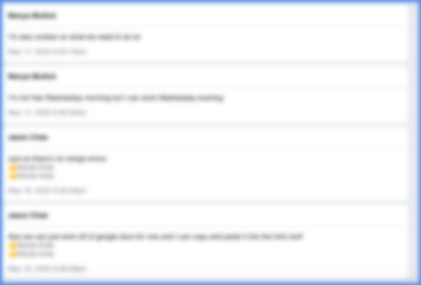
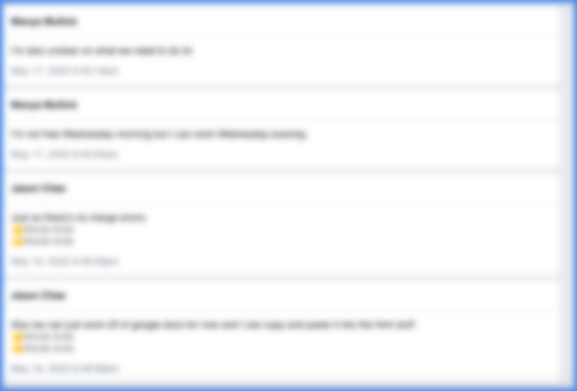

Digitizing Human Rights: Privacy
With the advancement of technology, data privacy becomes more imperative for users as they spend more time on the digital world. The UDHR has one article that states the right to privacy but we would like to elaborate more on that with the context of the digital age. Privacy as a concept is very elusive: not because it’s hard to define but because it’s dynamic and influenced by companies and government choices. It’s dependent upon and affects ethics, trust, and our current technology. It’s important to clearly identify our rights to privacy as a symmetry of surveillance creates an imbalance of our universal human rights. One thing to note is how we differentiate between the terms privacy and security: privacy is about a user controlling how their personal data is being collected, used, and published. While on the other hand security is about the technological means or tools to protect that data itself.
Article 1
The autonomy over one’s own self is derived from one’s right to privacy. Privacy is not a privilege but rather a right upon which many other rights are derived. Securing this individual right will be a collective responsibility.
Article 2
The use of personal data to create exploitation in pricing or discrimination in services, employment, or other necessities is a violation of privacy, an inherent human right. The influencing of user behavior built off of personal data is also a violation of privacy.
Article 3
The abuse of data to create technology with negative impacts to the user is a direct violation against the rights of the people who provided the data, and restitution must be made to those from whom the data was derived.
Article 4
The data provided by oneself and subsequently derived from that data holds an immutable and nontransferable ownership by the self. As this data is provided to others, a chain of custody must be easily accessible, documented, and immediately available to the owner, who is the original authority with notification.
Article 5
Everyone is entitled to the right to have their data recalled and removed from the possession of all other parties. The request for removal should be easily accessible, quick, and clear to the individual.
Article 6
Exceptionally vulnerable populations such as children under 13 must have more stringent security provided for their privacy. Only authorized personnel may collect and transmit data on vulnerable individuals.
Article 7
One is entitled to know which parties their data is being shared to and have the right to deny this information to be shared. A seizure of this data without consent is a violation of the inherent dignity of man.
Article 8
Information that may expose an individual's mental health information or medical information should not be exploited by sharing this information to third parties, manipulate an individual's behavior, or put the individual in harm.
Article 9
Encryption of data as a means of securing the transmission of information against unauthorized access is an expectation that should be afforded to all.
Article 10
Increased levels of security should not be priced higher, as this is exploiting the fear of surveillance. A technology must include security and privacy within its design.